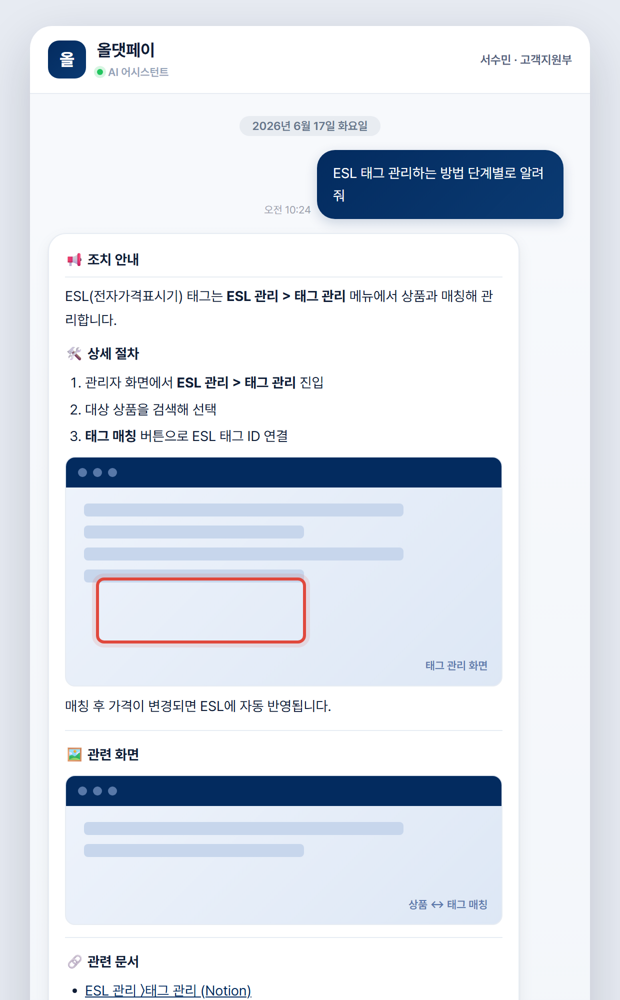
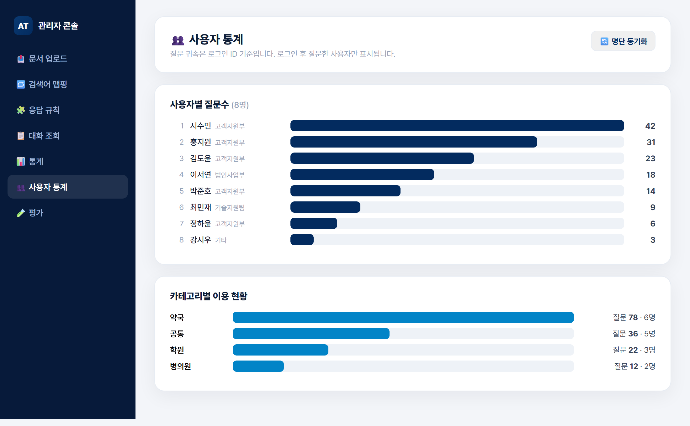
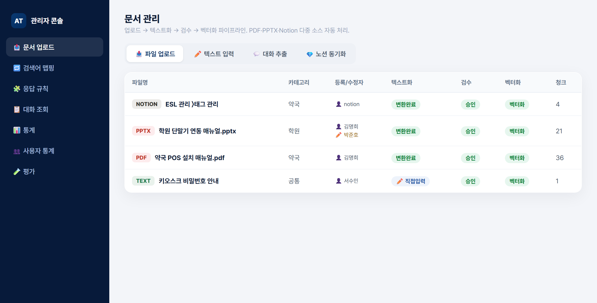

PostgreSQL · pgvector 하이브리드 검색과 Cross-encoder 리랭킹, 검색 실패를 스스로 보정하는 자기교정(Corrective RAG) 루프, 멀티모달 문서 처리(PDF·PPTX·Notion)를 결합해 5개 업종 사내 지식을 답변하는 RAG 챗봇. 검색·생성 파이프라인부터 관리자 콘솔, 골든셋 기반 자동 평가, 사용자 분석, 배포·운영까지 직접 구현했습니다.
사내 직원이 업종별 매뉴얼·운영 지식을 자연어로 질문하면, 근거 문서를 검색해 출처와 함께 답변하는 사내 전용 AI 어시스턴트입니다. "그럴듯하지만 틀린 답변"을 막기 위해 근거 기반 응답·관련 문서 노출·미답변 추적을 핵심 원칙으로 설계했고, 실제 운영을 위한 관리자 콘솔과 사용자 분석까지 하나의 시스템으로 구축했습니다.
기획·아키텍처·백엔드·프론트엔드·DB·배포까지 단독 풀스택 개발. RAG 파이프라인 설계와 검색 품질·응답속도 최적화를 주도.
분산된 업종별 매뉴얼(PDF·PPT·Notion)을 직원이 빠르게 찾기 어려움. 일반 LLM은 사내 사실을 모르고 환각 위험.
사내 문서를 벡터화한 하이브리드 RAG + 리랭킹으로 근거 기반 답변. 출처 링크·관련 화면을 함께 제공.
last_edited_time 기반 증분 동기화(변경 페이지만 재처리). 만료되는 이미지 URL은 자체 서버로 재호스팅.사용자용 스트리밍 챗봇과 운영자용 관리자 콘솔을 하나의 시스템으로 구현했습니다. 검색·생성뿐 아니라 운영과 분석까지 닿아 있는 제품입니다.



[그림N])을 배치하게 유도해 본문 해당 단계에 인라인 렌더링.